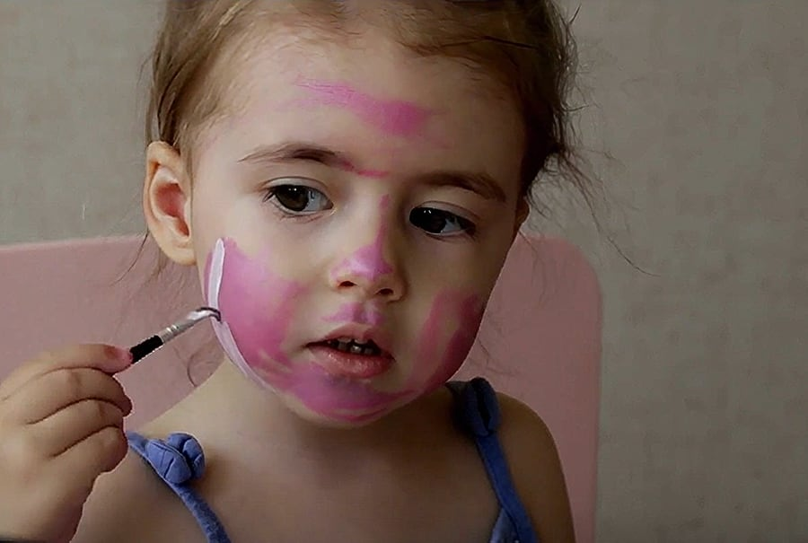
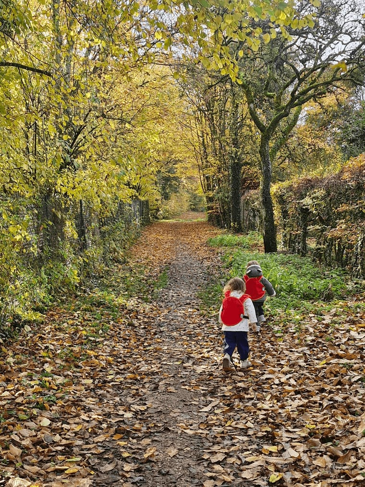
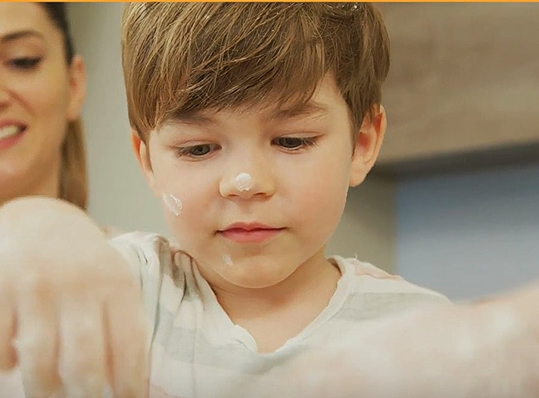
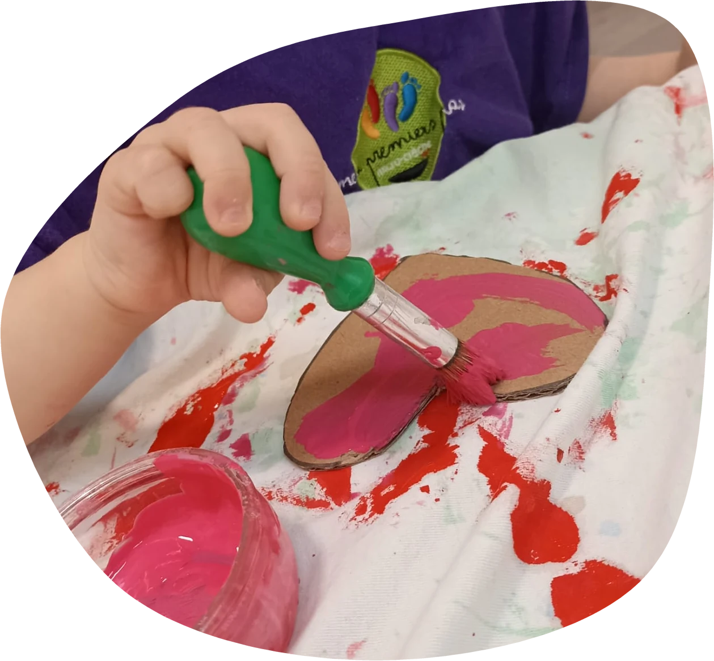
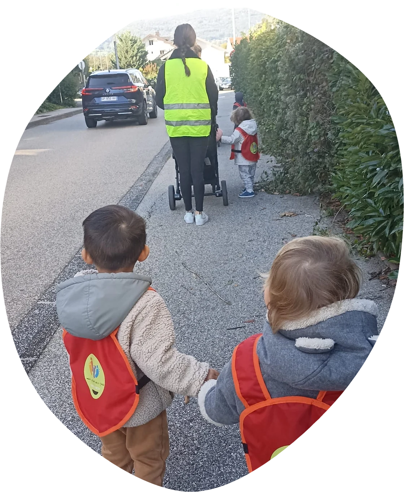
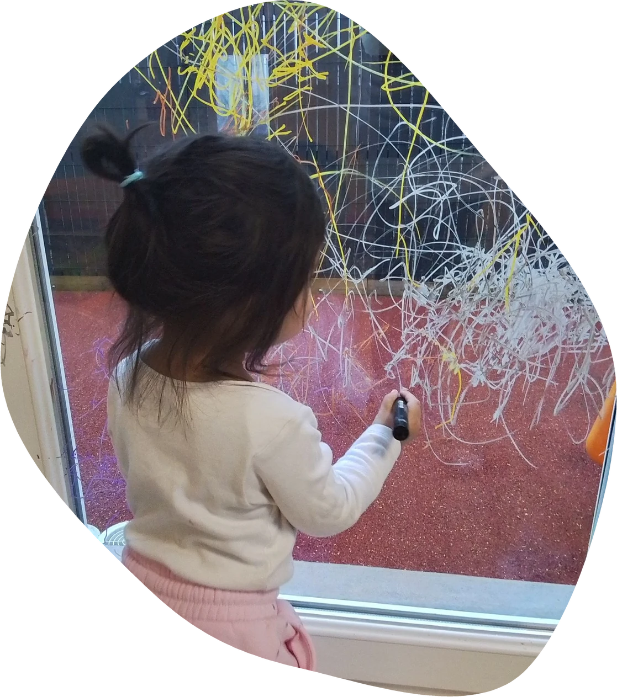
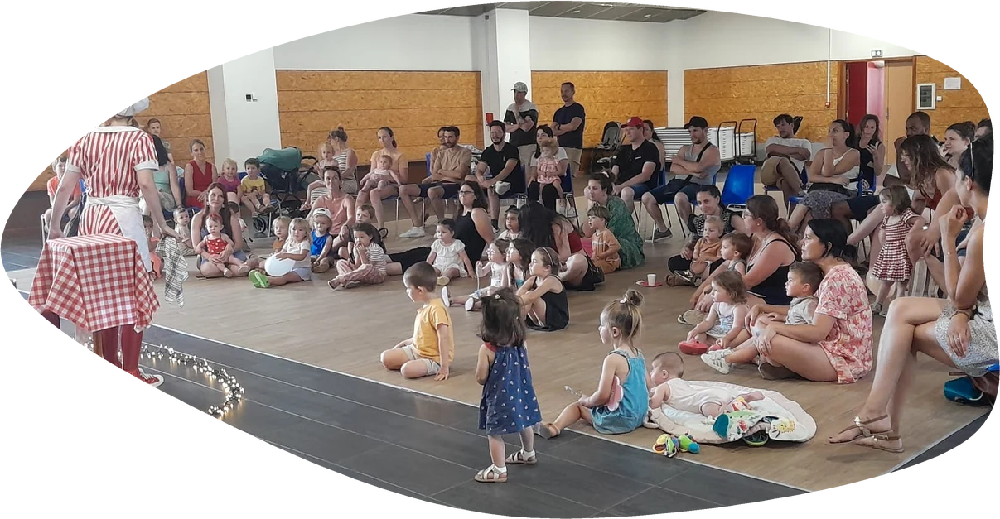
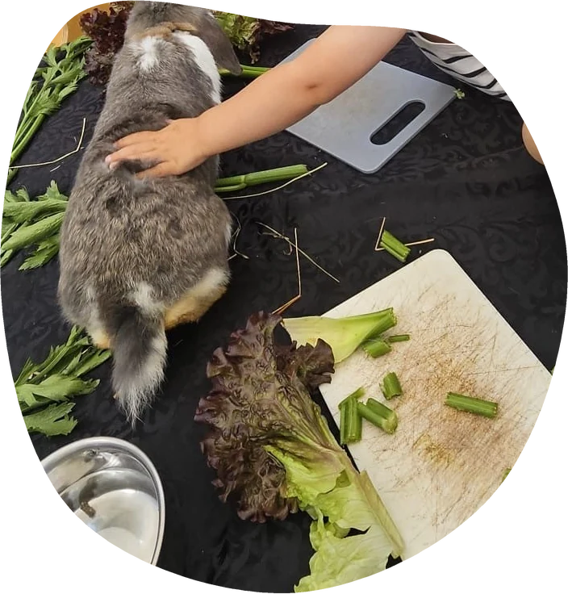

Grandiravec les Liens,les Sens,et la Bienveillance
Nos différentes crèches

Les p'tis cœurs de l'Ocean
Ouverte en 2026 à Maisonneuve, cette micro-crèche plonge les enfants dans un univers aquatique apaisant. Entre jardin avec vue sur les montagnes et découverte du vivant grâce à notre poulailler, nous offrons un cadre naturel unique propice à l'éveil et à l'imaginaire.
La p'tite forêt
Nichée dans un environnement calme à Vers, cette crèche au thème forestier offre une ambiance douce et chaleureuse. Grâce à sa salle de vie lumineuse ouverte sur les sommets et sa proximité avec le parc et la bibliothèque, les enfants grandissent au rythme de la nature.
Les p'tits montagnards
Idéalement située et facile d'accès, notre structure de Valleiry s'inspire de l'univers montagnard. Entre sorties culturelles et sensibilisation à la nature grâce à son jardin intégré et son poulailler, elle offre un cadre de vie dynamique et authentique pour vos enfants.
La p'tite savane
Située au cœur d'un quartier dynamique à l'entrée de Saint-Julien, cette crèche lumineuse transporte les petits dans l'univers de la savane. Ses vastes espaces en bois, dédiés à la motricité et au jeu, garantissent un accueil sécurisant et épanouissant face à un écrin de verdure.
Qui somme nous ?
Les micro-crèches Mes Premiers Pas accueillent les enfants de 2,5 mois à 4 ans dans un environnement chaleureux et sécurisé, où le petit nombre d'enfants permet un accompagnement attentif, personnalisé et respectueux du rythme de chacun.
L'équipe pilote
Après plusieurs années en comptabilité puis comme assistante maternelle, Sonia découvre le concept des micro-crèches en 2017. Convaincue, elle ouvre sa première crèche en 2019, puis développe le réseau avec plusieurs ouvertures successives. De nouveaux projets sont encore à venir.

L'enfant au cœur de priorité
Dans nos établissements, ce n'est pas à l'enfant de s'adapter à l'adulte et à ses contraintes, mais aux adultes de tout mettre en œuvre pour soutenir le développement de chaque enfant.
Nos valeurs
Le respect de l'être humain
Chez Mes Premiers Pas, nous souhaitons profondément respecter l'être humain. En effet, chaque personne (familles, professionnels de terrain et professionnels de bureau, intervenants, partenaires...) ont leur propre histoire et perception du monde.
Nos valeurs
La bienveillance
La bienveillance peut être définie comme "La qualité d'une volonté qui vise le bien et le bonheur d'autrui". Ainsi, chez Mes Premiers Pas, notre volonté est de viser le bien pour le bonheur des enfants, parents et collaborateurs.
Nos valeurs
La communication
Nous souhaitons mettre au cœur de chaque relations humaines une communication positive, bienveillante et transparente. Effectivement, nous souhaitons des relations fluides pour le bien être de tous.
Nos valeurs
Le respect de l'environnement
Nous souhaitons respecter l'environnement dans nos pratiques. Par exemple, nos surchaussures, nos charlottes, nos masques sont réutilisables et lavables. Nous utilisons également la vapeur et le vinaigre pour nettoyer et désinfecter.
Nos valeurs